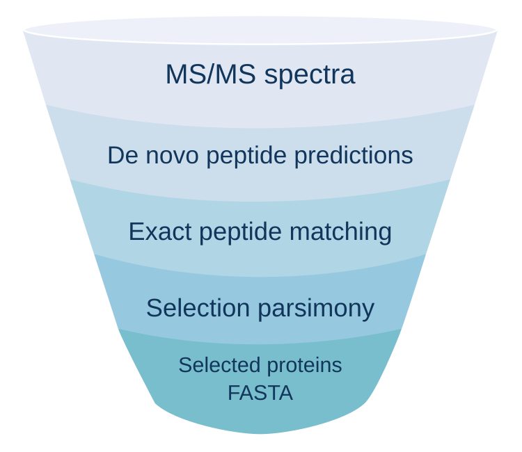

FastaLake#
FastaLake uses de novo peptide evidence to construct compact protein databases for proteomics and metaproteomics. Complete proteins are selected from large sequence repositories for each mass spectrometry acquisition. The resulting databases are searched with Sage, followed by protein grouping and quantification within each study. Matched metagenomic and metatranscriptomic sequences can be included when available.

Getting started#
The Docker image bundles Python, the compiled Rust tools, Sage, directLFQ, AlphaPeptTools and the example inputs.
git clone https://github.com/MannLabs/fasta-lake.git
cd fasta-lake
bash tools/check_local_docker.sh docker_check_01
The first build downloads dependencies. The examples then run offline within 4 GiB of RAM and two CPUs. Success ends with PASS, and every table, plot and log stays in docker_check_01/.
Set up with an assistant#
Working with an agent or LLM? Give it the repository's AGENTS.md and a
task file for what you want to do.
Each task names the inputs to supply and the outputs to check, with example
files to adapt.
Documentation guide#
-
Example data
Every bundled example, what it produces and how to read the result.
-
Study analysis
Acquisition manifest, preflight, result folders, first study.
-
Matched metagenome or metatranscriptome
One FASTA and one TPM table per specimen, added after de novo selection.
-
A large reference and limited memory
Chunked extraction, measured limits, laptop or cluster.
-
A cluster, with an assistant
Scheduler-first prompts for ChatGPT, Claude or a coding agent.
-
Methods and interpretation
The principle, the algorithms and the output contract.
How it is tested#
Continuous integration runs on every push: the six Rust crates (fmt, clippy, tests), the Python suite under Python 3.10 and 3.12 with warnings treated as errors, the analysis and directLFQ suites, dependency and licence checks, the source manifest, and the public CAMPI SIHUMIx acquisition windows end to end (PRIDE data). The Docker workflow builds the image and runs every bundled example offline. Validation records what the examples check; Development records what remains open.
Credits#
FastaLake uses Sage, directLFQ and AlphaPeptTools. Please credit them alongside the FastaLake revision and settings. Code is under the MIT licence. Bundled data and third-party dependencies keep their own terms. A manuscript is in preparation. Cite the repository revision until a DOI exists.
AI-assisted development#
Much of FastaLake's code and documentation was developed with Codex Astra (reasoning effort: xhigh), Opus 4.8, Opus 5 and Fable. The authors remain responsible for the software, design decisions, validation and scientific claims. AI assistance is not evidence that an implementation is correct. The validation documentation describes the checks and their limits.